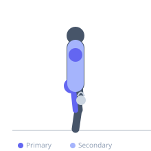
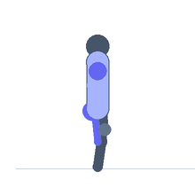

Exercise guide / Kettlebell Snatch
Kettlebell Snatch
The kettlebell snatch is a single-arm ballistic exercise in which the kettlebell is swung from between the legs directly overhead in one continuous motion, arriving in a locked-out overhead position on the same side as the working hand. It is considered the king of kettlebell exercises, demanding explosive hip extension power, shoulder stability, overhead mobility, and the precise timing to guide the bell into a safe overhead position. The kettlebell snatch is used in competitive kettlebell sport as well as general athletic conditioning.
Primary muscles
gluteus maximus
biceps femoris long head
deltoid anterior
infraspinatus
Secondary muscles
trapezius upper
latissimus dorsi
erector spinae
Stabilizers
supraspinatus
transverse abdominis
Equipment
Kettlebell


Starting position
- Stand with feet shoulder-width apart, kettlebell on the floor between the feet. Hinge to grip with one hand.
Setup
- Master the kettlebell swing and clean before attempting the snatch. Choose a moderate weight.
Steps
- Step 1: Hike the kettlebell between the legs with a sharp hip hinge.
- Step 2: Explosively extend the hips to drive the kettlebell upward in a tight arc close to the body.
- Step 3: As the bell rises past the shoulder, punch the hand up and forward to rotate underneath the bell.
- Step 4: Lock out the arm overhead, with the bell resting against the back of the forearm and the arm fully extended.
- Step 5: Hold briefly, then hinge back and guide the bell down in a controlled descent back between the legs.
Coaching cues
- Tight arc — bell stays close
- Punch through at the top
- Lock out — pause — then descend
Breathing
- Exhale sharply at hip drive. Inhale on the descent.
Range of motion
- Full hip extension at drive. Full elbow lockout overhead. Full controlled descent.
Tempo
- 5–10 reps per arm. Used in timed sets (5–10 minutes) in kettlebell sport.
Common mistakes
- Letting the bell loop away from the body — keep it tight on the way up
- Punching late — if timed wrong, the bell flips over and bangs the wrist
- Not locking out the elbow fully overhead
Safety
- Wrist impact during the punch-through phase is a common beginner hazard — use lighter weight until timing is established.
- Shoulder instability contraindicates this exercise.
Training
- strength: 3–6 reps
- endurance: 10–20 reps
- strength: 3–5 sets
- endurance: 3–6 sets
- Rest: {'strength': 120, 'endurance': 60}